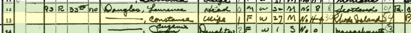
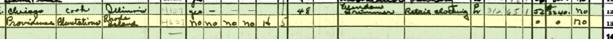
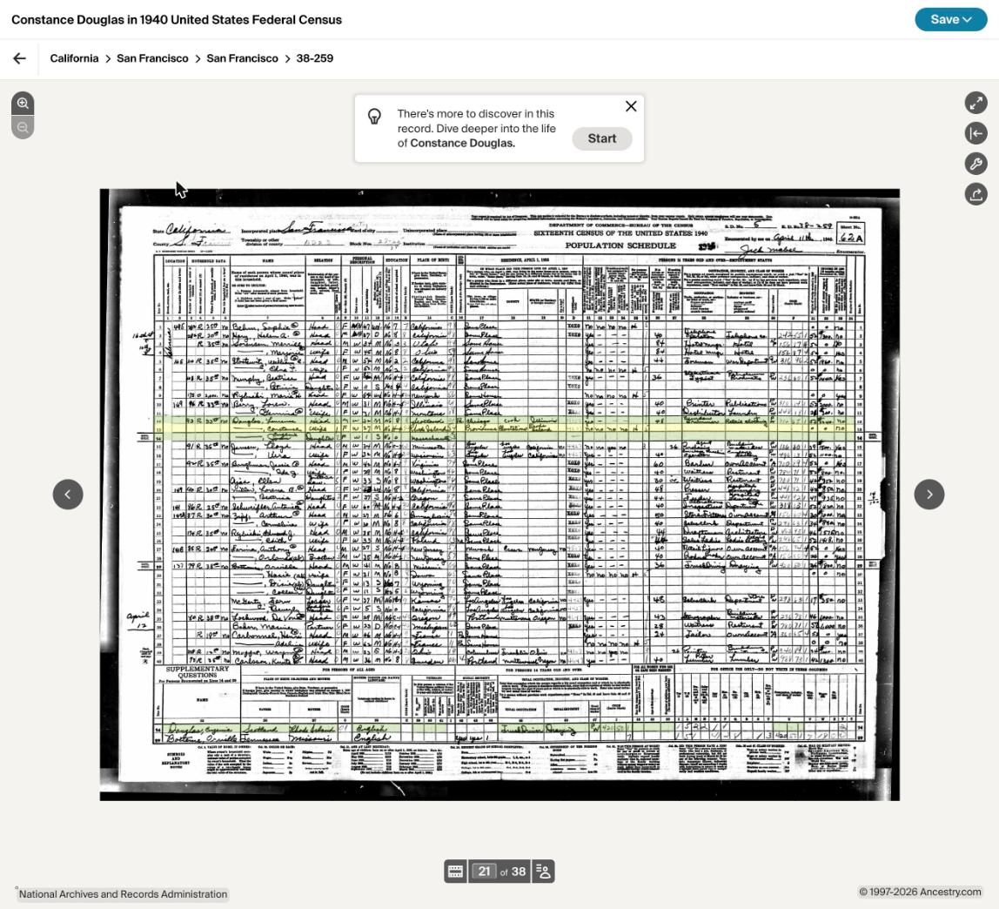

1940 U.S. census: Laurence, Constance and Eugenie Douglas, Valencia Street, San Francisco
1940 United States Federal Census



The original record, as it appears in the register or index.
What this document is
The United States census. A census taker went door to door and wrote down every person in each household, with age, birthplace and work.
What it says
Enumerated April 11, 1940. Laurence Douglas, head, rents for $35 a month, M, W, 32, married, school completed 8th grade, born Scotland; in 1935 lived in Chicago, Cook County, Illinois; worked 48 hours the week before; window trimmer, retail clothing, wage worker; 52 weeks worked in 1939; wages $2,240. Constance, wife, F, W, 27, married, not in school, highest grade completed: 4th year of high school, born Rhode Island; in 1935 lived in Providence, Rhode Island; not working, keeping house; no wages in 1939. Daughter, F, W, 1, born Massachusetts: the name was first written "Joan" and is corrected to "Eugenie" above it; the supplementary-question line for this child gives father born Scotland, mother born Rhode Island.
Place
93(?) Valencia Street, San Francisco, California (SD 5, ED 38-259, sheet 62A)
How it was read
Read from the census image. Ancestry indexes the daughter as "Joan"; the image shows the correction to Eugenie.